4+ months, Spring 2021 - present Bring your own cup app (v1)
Team & role
Thomas Lee, Priscilla Lam, Sun, Angela Sun (devs)
My role: lead UX designer, low-high-fidelity mockups
site-mapping, prototyping, user flows, website redesign
Overview
BYO is a mobile app-based program where customers who bring their own cups to local cafes can collect points towards rewards while contributing to global reforestation efforts by allocating a part of their usual discount to tree planting.
Beta launch ⚡️
The app will have a total of 2 launches planned for the year 2021. The beta launch for usability testing will only consist of the login pages, impact dashboard and in-store scanning pages. The second version of the app will have more complex features such as the rewards library and shop profiles.
Problem space
Every minute, Vancouver throws out an average of 258 disposable cups amounting to over 130 million cups annually. Current incentives for bring-your-own-cup, such as small in-store discounts and cup surcharges, are minimal and struggle to encourage large change.
Solution
BYO is a mobile app-based program where customers who bring their own cups to local cafes can collect points towards rewards while contributing to global reforestation efforts by allocating a part of their usual discount to tree planting.
Target audience
Metro Vancouverites who sometimes / often buy to-go drinks and are interested in taking small steps towards sustainability.
User goals
Customers can track and amplify their collective environmental action, achieving a sense of personal accomplishment
Join the reuse movement, achieving a sense of community and collective action
Take advantage of discounts and free rewards
Building a sustainability-centered network
Competitive analysis
In the second version of the BYO app, we plan on implementing a rewards library where users can collect and redeem their rewards. We researched and assessed existing competitors to identify and compare key features.
Key takeaways üìå
Efforts have been implemented to reduce disposable cups but none have leveraged bring-your-own-cup collectively
Current reward apps that exist in the restaurant industry are mostly based on the traditional premise of transactional loyalty.
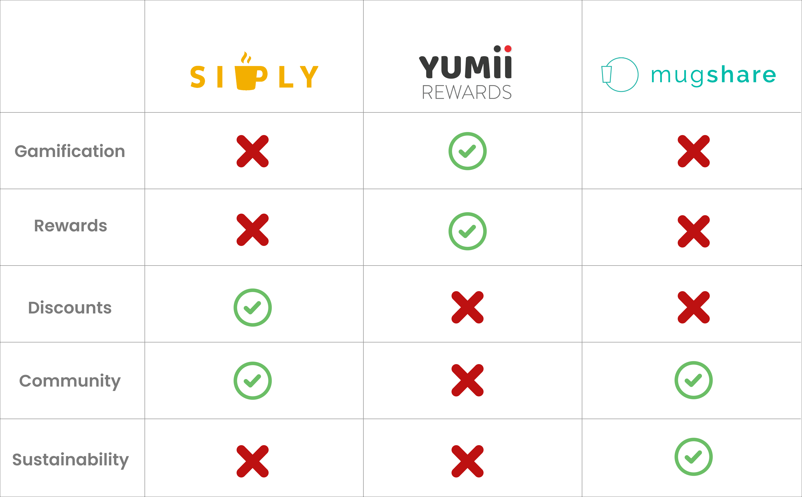
Competitive analysis of local competitors
Amplifying user impact
For BYO, instead of using solely rewards to incentivize consumers, our tree planting aspect seeks to connect consumers to a broader global impact and shape a community. Because there is no app on the market that recognizes this, we want to create one that leverages these grassroots connections to drive change.
Track and amplify their collective environmental action
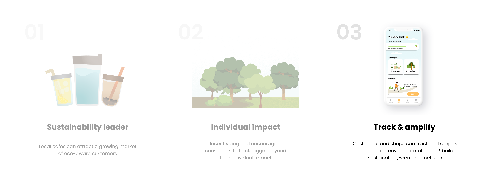
App design process
App style guide
I kickstarted my design process by creating a style guide for future designers to reference from. Despite being the only UX/ UI designer on the team, it was important for me to not only verbally, but visually present my ideas to the team in weekly check-ins. My team decided to opt for an orange color palette for the first iteration to reflect BYO's fresh and innovative ethos.
Style guide prototype for BYO
Understanding the user flow
At first glance, it was a little bit confusing to grasp the concept of having to claim the reward first in order to redeem it afterwards by using the scan button. As the BYO app is a reward based application, it was especially important for my team, especially back-end developers to clearly understand the reward-claiming process.
User flowchart for rewards
Impact dashboard low-fi
For the dashboard prototype, I focused on exploring different layout options for the app through quick 12-minute low-fidelity wireframe design sprints.
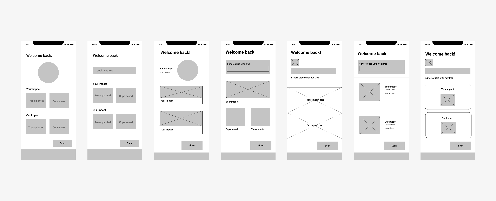
Dashboard low-fidelity wireframes
Wireframing + user flow
For the second prototype, I focused on creating a more sophisticated design while considering some important UX aspects. The third prototype is still a work in progress and the app will launch after re-iterating a workable prototype.
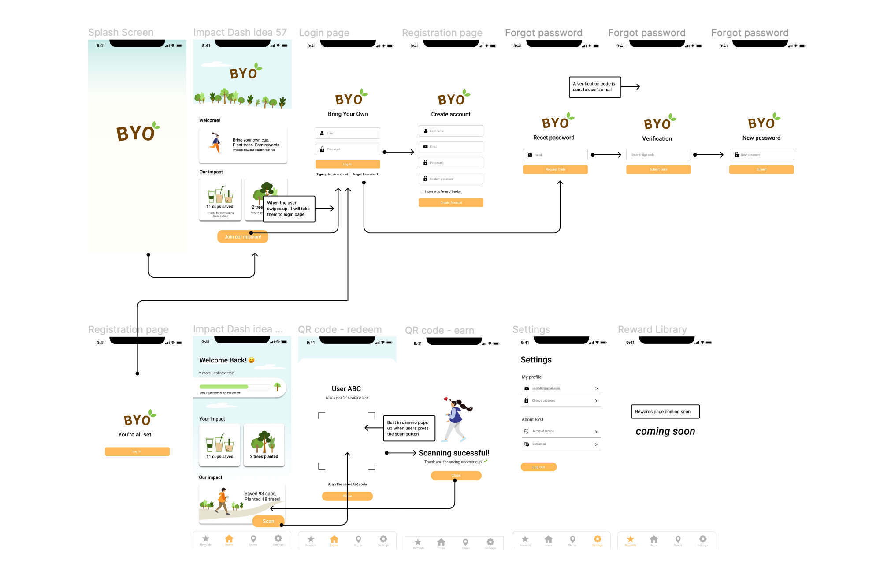
High-fidelity mockup (work-in-progress)
Layout exploration
Brainstorming the graphical elements for the home screen was the most challenging part of this project. My team wanted to put emphasis on displaying the user's meaningful impact on reducing waste through graphics. Although this is still a work-in-progress, my team will continue to explore different ways to emphasize the feeling of personal accomplishment from reducing disposable cup waste through visual representations.
Layout explorations prototype
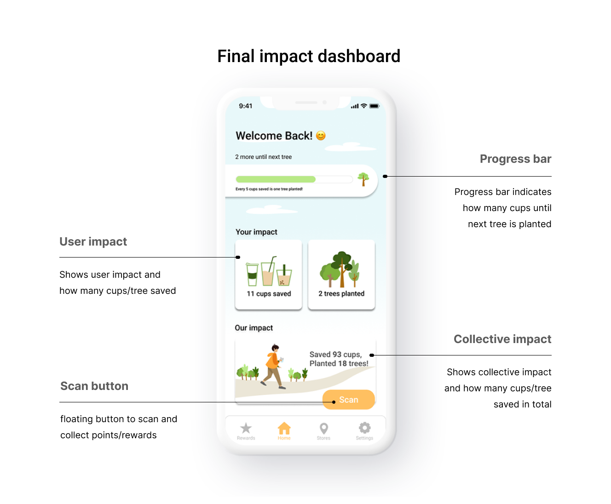
Final impact dashboard for the Beta Launch
V1 scanning flow
The floating button features allows users to click the scan button on any page of the app. The built-in scan page allows users to scan directly on the page without transitioning to the camera app.
First scanning iteration
In the early stages of the scanning iteration, my team was planning to implement a pop-up page for when the scanning is unsuccessful so there is a visual consistency with the "successful scanning" pop up page. However, after discussing the user flow with my team, we came to the conclusion that this may be adding an extra step for users.
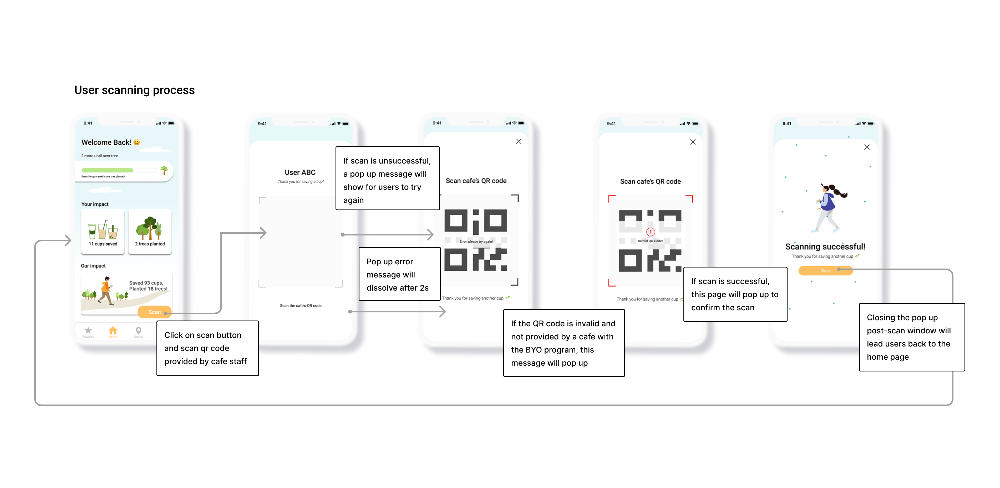
Final scanning iteration
We decided to add a transparent pop-up message and red borders instead, which would disappear after a few seconds and allow users to continue scanning while the message is still in display. In the case that the QR code is invalid and not provided by a cafe with the BYO program, "QR code invalid" message will pop up.
Challenges
Another challenge was trying to figure out the user flow in the initial stages of the protoype without actually doing formal user testing. As our app may be confusing, especially for first-time users, it was really important to consider usability testing for the next iteration, making sure that users could easily understand how to navigate through the app.
Future explorations for v2
Implementing shop profiles and a reward library will be the primary focus for v2 of the BYO app. Adding shop profiles is important for users to understand the unique shop policies and discounts per cup/ cup size which varies from store to store. During my team's weekly check-ins, I suggested to implement user profiles in order to give users a more personalized experience and provide the option to claim/redeem their rewards separately.
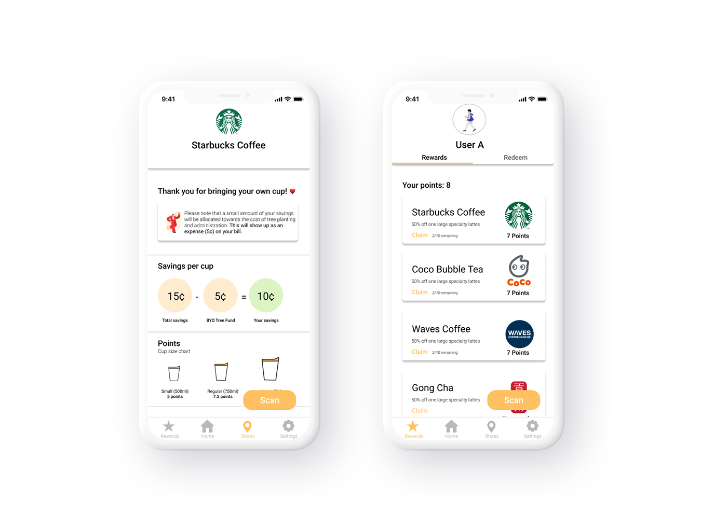
Shop profile prototype (left), User profile prototype (right)
Shop profiles
I created a mid-fi prototype of what the shop profiles could look like in version 2. Users can access the list of nearby stores though the home screen navigation and upon tapping on the "learn more" button, they can see each shop's unique policies and reward program.
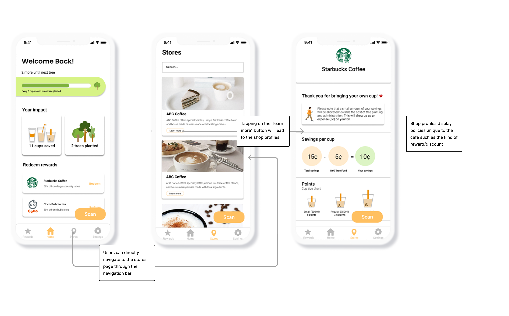
User flow for shop profiles
Reward library
The reward library will consist of a reward-claiming page and reward-redeeming page. Users need to claim the reward and choose to redeem immediately or at a later time. The logistics of the reward library user flow is still in discussion.
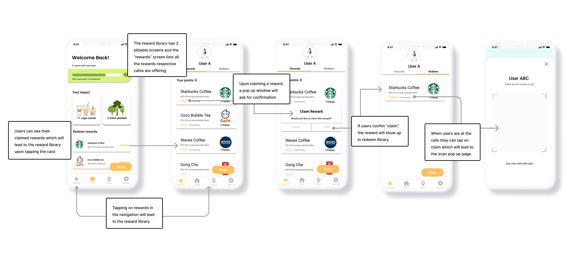
Reward library -claiming and redeeming process
V2 flowchart
This is the updated user flowchart for v2. The reward claiming/redeeming process implementation will be the primary focus of the version 2 launch.
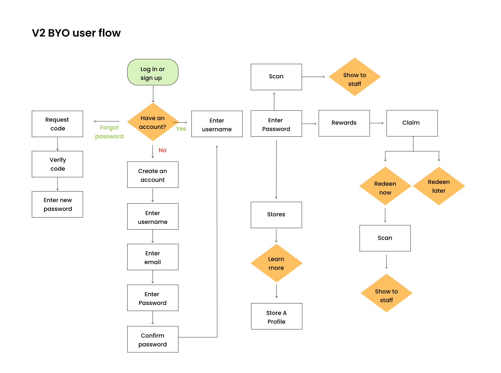
User flow for shop profiles
Website redesign
Old BYO website
The old BYO website didn't feel inviting and displayed minimal information about the company itself and their mission and primarily focused on conveying the problem space. We decided to move the problem space element down in the home page hierarchy of content and elaborate more on answering the questions "who" and "why" for BYO so that users can get a better idea of what BYO is and how it works immediately upon landing on the home page.
Old and oudated BYO website
BYO website re-imagined
The website design was inspired by the pattern library designed for the BYO app and the app dashboard that is currently in the process of being built. The founders of BYO emphasized wanting a more "fun" "inviting" and lively" look for the website which I tried to amplify using lighter colours and fun graphic accents.
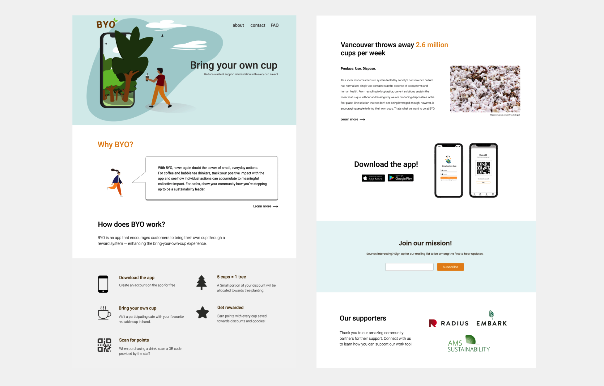
New and revamped BYO website Orange accent colours and fun graphic designs
Final thoughts
Being the only UX designer on the team and building an entire app from scratch with no experience in app design and limited resources was very challenging. However this was a one-of-a-kind experience- I'm glad I took the initiative to create feasible prototypes and experience collaborating with developers for the first time.
After the Beta Launch happening this summer, I plan to do focus user group testing and gather important user feedback to enhance the UI of the app as well as implementing a seamless reward claiming/ redeeming process which is a primary feature of the BYO app.